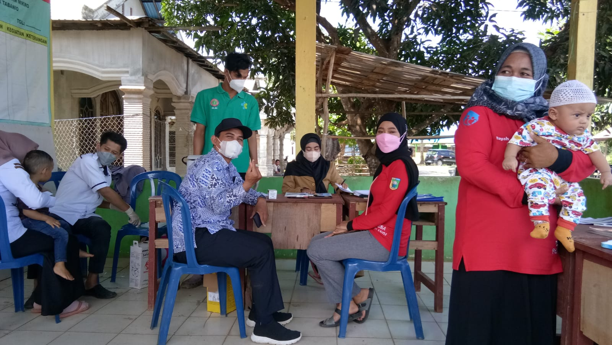

Manfaat Penyuluhan Kesehatan Gigi dan Mulut untuk Lansia di Posyandu Tunas Mekar RT 001 / RW 004
01 Agustus 2024 - Oleh : Posyandu Tunas Mekar
Penyuluhan kesehatan gigi dan mulut untuk lansia di Posyandu penting karena gigi dan mulut yang sehat merupakan aspek penting dalam menjaga kualitas hidup seorang lansia. Dalam usia lanjut, banyak lansia yang mengalami masalah gigi dan mulut, seperti gigi tanggal, gusi berdarah, atau penurunan fungsi gigi. Kondisi ini dapat memengaruhi pola makan, kesehatan umum, dan kualitas hidup mereka.
Seiring dengan pertambahan usia, tubuh manusia mengalami perubahan, termasuk pada gigi dan mulut. Gigi menjadi lebih rapuh dan rentan terhadap kerusakan, dan penurunan fungsi gigi dapat mempengaruhi kemampuan lansia dalam mengunyah makanan dengan baik. Selain itu, masalah pada gigi dan mulut juga dapat berdampak pada kesehatan umum, seperti meningkatkan risiko infeksi dan penyakit jantung.
Melalui penyuluhan kesehatan gigi dan mulut untuk lansia di Posyandu, lansia dapat memperoleh informasi dan pengetahuan yang diperlukan untuk menjaga kesehatan gigi dan mulut dengan baik. Mereka akan diberikan pemahaman tentang kebiasaan hidup sehat, teknik menjaga kebersihan gigi, dan tanda-tanda masalah gigi yang perlu segera ditangani. Dengan pengetahuan ini, diharapkan lansia dapat mengambil tindakan pencegahan yang tepat dan menghindari komplikasi yang mungkin terjadi.
Manfaat Penyuluhan Kesehatan Gigi dan Mulut untuk Lansia di Posyandu
Penyuluhan kesehatan gigi dan mulut untuk lansia di Posyandu memberikan sejumlah manfaat penting untuk para lansia, antara lain:
- Meningkatkan kesadaran tentang pentingnya menjaga kesehatan gigi dan mulut dalam usia lanjut.
- Memberikan pengetahuan tentang kebiasaan hidup sehat yang dapat menjaga kesehatan gigi dan mulut.
- Memperkenalkan teknik menjaga kebersihan gigi yang tepat dan efektif.